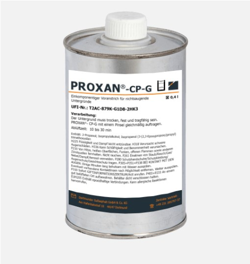
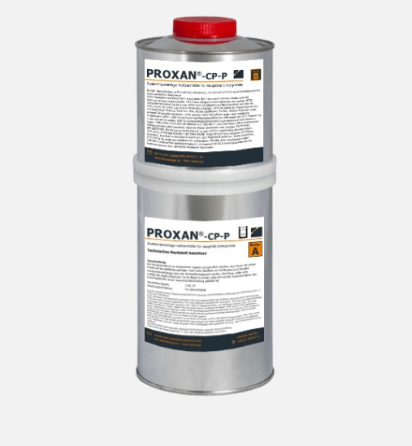
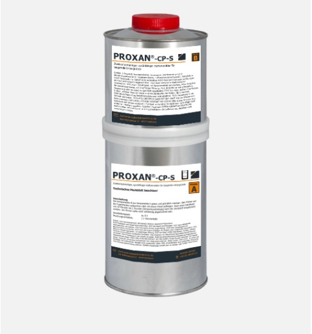

Полимерно-модифицированная, битумсодержащая мастика для помещений, предназначенных для хранения, заливки и перегрузки
Мастики для заливки швов
Горячего нанесения
Подходящий праймер

Cодержащий синтетик праймер для всех битум содержащих мастик типа BIGUMA®
COLZUMIX®- Haftgrund
Холодного нанесения

Двухкомпонентный герметик на полисульфидной основе с допуском строительного надзору
PROXAN®- KV 3 G/ KV 3 ST
Подходящий праймер
Двухкомпонентный промотор адгезии для полисульфидных уплотнительных материалов/ мастик для заливки швов на специальных основах
PROXAN®- CP-A
Жидкотекучей промотор адгезии для поли сульфидных уплотнительных веществ, применяемых на не абсорбируемых поверхностях
PROXAN®- CP-G
Двухкомпонентный промотор адгезии для полисульфидных уплотнительных веществ на абсорбируемых поверхностях
PROXAN®- CP-P
Двухкомпонентный, распыляемый промотор адгезии для поли сульфидных уплотнительных веществ на абсорбируемых поверхностях